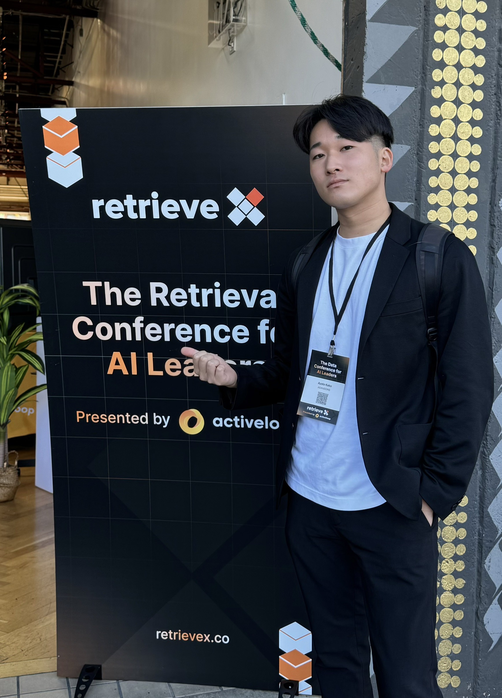

About

加来 彩人
- 【経歴】
- 2020年3月：日本大学第三高等学校を卒業。
- 2020年4月：青山学院大学理工学部機械創造工学科に入学。
- 2024年3月：青山学院大学理工学部機械創造工学科を卒業。
- 2024年4月：青山学院大学大学院理工学研究科理工学専攻知能情報コースに入学。
- 2024年4月：大学院を休学し，現在は一年間の語学留学でサンフランシスコへ。
- 【研究タイトル】
- 2022年：自らの身体に対するロボットマッサージ操作における操作他者感の増大
- 2023年：HARTS:機械学習による人間拡張技術の操作取得時間短縮と性能最適化
Skills
C
HTML&CSSによるコーディングを行っています。「レスポンシブデザイン」「スマホファースト」「キレイなコーディング」を意識して行っています。
C++
開閉式のQ&AやスクロールボタンなどのWebサイトでは基本的な動きをjQueryやJavaScriptでつけることができます。
C#（Unity）
HTML/CSSでコーディングされたものをWordPress化したり、テンプレートを使ったカスタマイズを行うことができます。
Python
HTML/CSSでコーディングされたものをWordPress化したり、テンプレートを使ったカスタマイズを行うことができます。
Html&CSS
HTML/CSSでコーディングされたものをWordPress化したり、テンプレートを使ったカスタマイズを行うことができます。
Hobby